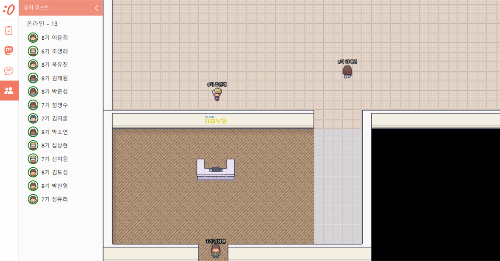
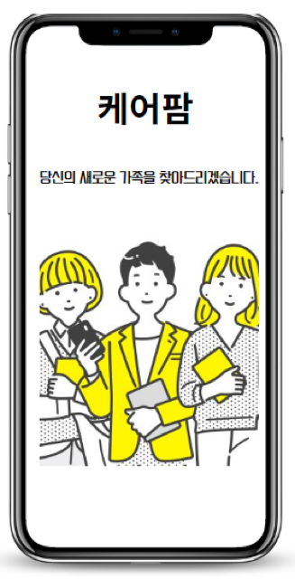
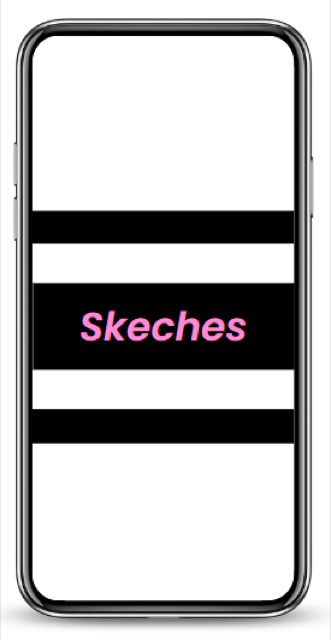

Frontend Developer
사람이 실제로 쓰는 화면을 만듭니다
반려동물 헬스케어 기기의 실시간 모니터링 앱부터 AI 채용·면접 서비스까지, 기획 단계부터 참여해 화면 구조를 잡고 프론트엔드로 구현해 왔습니다. 아래는 직접 맡았던 작업을 정리한 케이스 스터디입니다.
주요 프로젝트
Featured

그 밖의 프로젝트
More

뉴오 (NEW:O)
코로나로 멈춘 학원 커뮤니티를 메타버스 오피스로 옮긴 4개월 창업 프로젝트.

메타버스 에너지 전시관
한전KDN 공모전 장려상. Unity로 만든 1인칭 시점 가상 에너지 전시관.

케어팜
간병인이 필요한 사람과 간병인을 매칭하고 주변 요양 시설을 찾는 안드로이드 앱.

스케치스
스케치 자료를 올리고 종류별로 정리해 그림 실력을 키우는 안드로이드 앱.
홀로그램 AI 키오스크
Gemini API로 대화하며 주문하는 홀로그램 카페 키오스크.
선생님 문해력 탐험대
초등학생 문해력 학습을 돕는 교육용 윈도우 프로그램.
About
정유리 · 1998.10.02
실용성을 쫓는 개발자입니다. 화면을 예쁘게 만드는 것만큼, 그 화면이 실제 업무와 사용 환경에서 버티는지를 중요하게 봅니다.
동물병원 수술실에서 쓰이는 모니터링 앱처럼 실패하면 안 되는 화면과, 장애인 구직자가 쓰는 서비스처럼 접근성이 곧 사용 가능 여부를 결정하는 화면을 만들어 왔습니다. 기획 단계 회의부터 참여해 화면 구조와 데이터 흐름을 함께 정리하는 방식으로 일합니다.
- 경력
-
- (주)위드마인드 · 2025.07.30 ~ 현재
- (주)젠트리 · 2022.09 ~ 2025.02 (2년 6개월)
- 뉴오 · 2022.02 ~ 2022.06 (4개월)
- 수상
- 2022.03 한전KDN 데이터 결합·활용 아이디어 공모전 장려상
- 학력
- 학점은행제 졸업
- 희망연봉
- 3,800만원 이상 (협의)